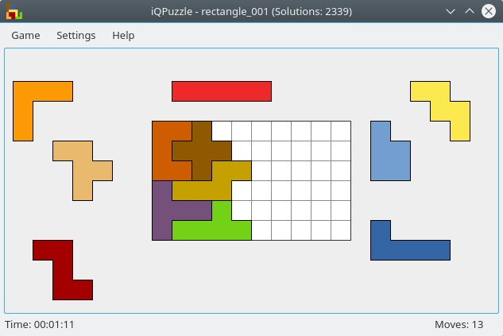

v1.5.1 (05. Jun 2026)
- Add Ukrainian translation - thanks to SomeTr!
- Move project to Codeberg
iQPuzzle is a diverting I.Q. challenging pentomino puzzle. The puzzle pieces are pentominoes, and there are more than 360 different board shapes to fill with them.

Please note that the macOS release was created automatically on a build server and has not been tested due to missing hardware. If you encounter any problems, please create an issue.
The game is controlled using the mouse. By default, puzzle pieces are moved using the left mouse button and drag-and-drop. The mouse wheel can be used to rotate pieces and the right mouse button can be used to flip them.
These settings can be changed via the 'Settings → Configure iQPuzzle' menu.
New translations and corrections are highly welcome! You can either fork the source code, make your changes and then create a pull request or you can participate on translate.codeberg.org.
You can find a manual for creating your own levels here. Feel free to submit a pull request on Codeberg and your level could be included in the next release!